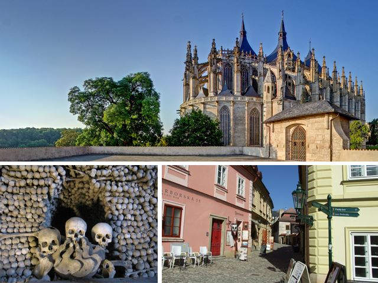

Chrám sv. Barbory, Vlašský dvůr, historické jádro města, Kostnice, Katedrála Nanebevzetí Panny Marie a sv. Jana Křtitele

Informace
Pro podrobnější prohlídku Kutné Hory volíte časově náročnější okruh. Navštívíte obě kutnohorské katedrály, královskou mincovnu i Hřbitovní kostel Všech svatých se světoznámou Kostnicí.
Hodnocení
Kokotko
Výlet byl velice dobrá fajnovka, Dobře jsem se zhulil